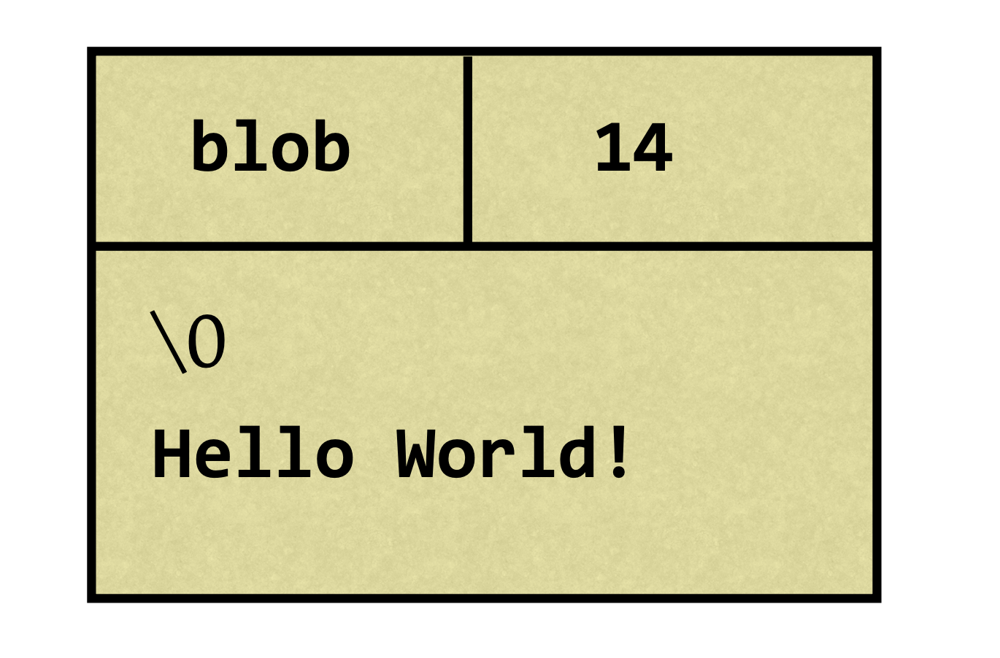
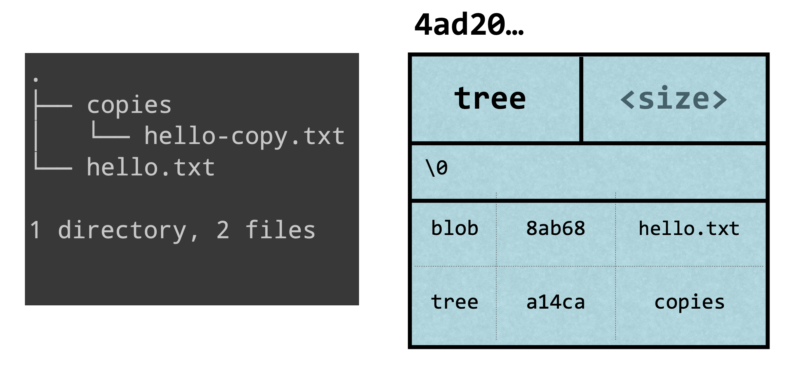
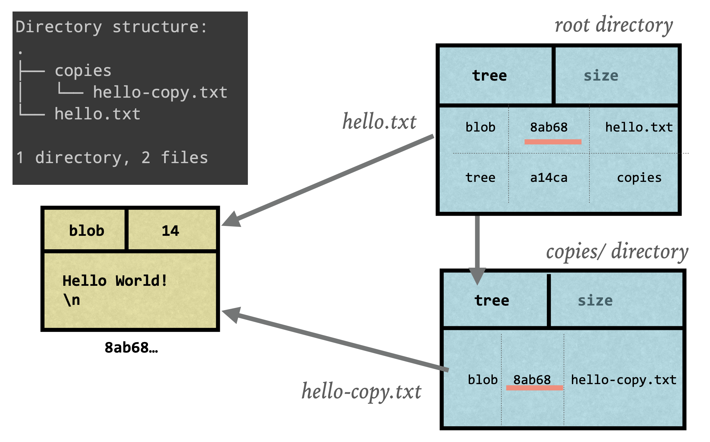
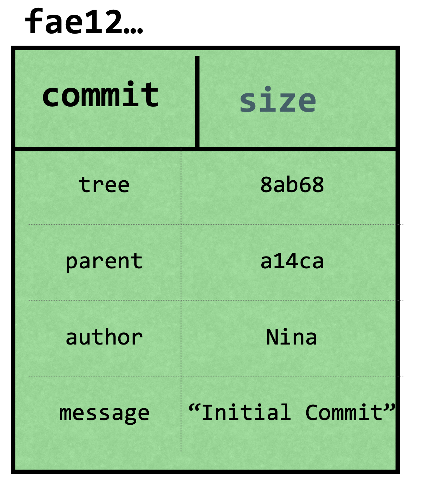
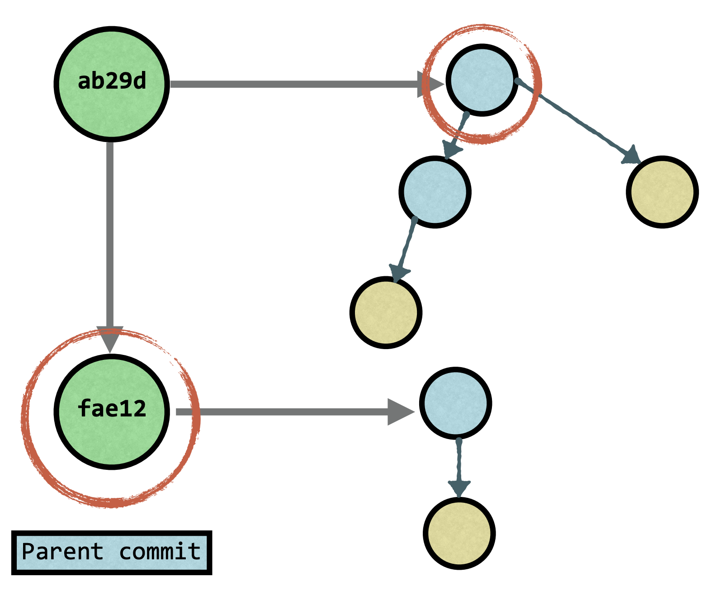

Advanced Git Concepts
Introduction
Almost everyone, starting from teachers, writers to developers, everyone uses git. It is a distributed version control system which allows you to track changes during development and also enables teams to collaborate on a single project in an easy way. But what is Git really? In this article we will take a look at some advanced concepts and some of plumbing commands of Git.
How does Git store data?
At its core, Git is a simple key-value store.
- The Value is data
- The Key is hash of that data
Git uses the key to retrieve the content
The key is generated using SHA1 which is a cryptographic hash function that produces 40 digit hexadecimal number. Given a peace of data, the output is always the same (typical of any hash function).
Git objects
Blobs
Git stores compressed data in a blob along with metadata in header:
- The identifier: blob
- The size of the content
- \0 delimiter (string terminator in c)
- The content
An example of blob data is:
Git generates the hash using hash-object plumbing command. If we generate a hash of string hello and also use openssl sha1 to generate the hash of the same data, the hashes will be the same:
$ echo -n hello | git hash-object --stdin |
As you see the hashes are the same. Blobs are generally unique in a git project. Git stores blobs in .git/objects directory. If you want to see it in action then add -w flag to previous command, and look at .git/objects directory. The newly genereted object will be stored in .git/objects directory; the first 2 letters of hash is folder name and the rest of the hash is file name.
$ echo -n hello | git hash-object -w --stdin |
Trees
Blobs are just for storing contents of file. But we need to store directory structure, filename etc. as well. The other kind of data structure that Git uses is called Tree.
A tree contains pointers to blobs and to other trees along with the metadata.
Metadata contains:
- Type of the pointer (blob or tree)
- fielname or directory name
- mode (executable file, symbolic link, …)
A typical tree would look something like this:
Because given content the hash is always going to be the same, in Git, identical content will be stored only once. Example of that can be demonstrated by storing copy of a file in other directory.
When we work with git, out files mostly stays similar and we change some lines of files (e.g. add methods, write comments etc.). Because of that, storing same with small changes file over and over would be inefficient. Git knows that and stores such objects in something called a “packfile”. Packfile contains an object (compressed) and deltas (difference between versions). Those packfiles are generated when you have too many objects, when you push into a remote or manually run Git’s garbage collector. Learn more about packfiles here.
Commit object
A commit is an object that points to a tree and contains some metadata:
- author and committer
- date
- message
- parent commit (can have multiple parents)
And commit id is SHA1 hash of all of this information. So, a typical commit would look something like this:
Commits are just snaphosts of the repository at given times.
Since commits are just another kind of objects, they’re also stored in .git/objects directory. But if you want to take a look at their content you won’t find anything there. Git has a command, called cat-file to inspect type and contents of an object. The command looks like this.
$ git cat-file (-t | -p) <sha1> |
Here, -t flat will give you type of the object, and -p will print contents of the object. And as you thought, <sha1> is SHA1 hash of the object.
For checking this, go ahead and look at your objects and try to see what’s inside those objects. I took an arbitrary object from my .git/objects directory and inspected some of them. And I should also mention that you don’t need to write the whole 40 digits of the hash, just first 6 characters are enough.
My first command is git cat-file -t 684ed3 which shows type of object which has hash starting with 684ed3. It showed that this object is a commit. Then I run git cat-file -p 684ed3 to print contents of this commit object. As you see, this commit object contains a pointer to a tree and to the parent commit, info about author and committer (in this case me) along with timestamps and finally commit message.
After this, I run git cat-file -p aa9572 to show what’s in that tree. And we clearly see that it has several pointers to other trees (directories) and some of those trees have pointers to other trees and some of them have pointers to blobs. So, a blob does not know what’s file name, a tree does.
The 6 digit numbers you see in front of trees are modes (we mentioned above) which specifies what kind of file is it and what permissions does it have. The first two digits are file type and last tree digits are UNIX permissions. Read more about modes here.
Also, note that no matter what (unless time freezes), a commit object will always have a unique hash. You know why? Yeah, because it contains a timestamp.
References
References are anohter kind of objects that are relatively simple. They are simply pointers to commits. Example of references can be:
- Tags
- Branches
- HEAD - a pointer to the current branch
When you switch between branches it is usually lightning fast, the reason is that branches are just pointers to commits and HEAD is pointer to current branch. When you switch to another branch, Git will just change HEAD to point to the other branch.
HEAD is stored inside .git folder and if you cat its contents, you can see that it is just a text that shows where is the current branch.
$ cat .git/HEAD |
Go ahead and cat the contents of .git/refs/heads/master, you will see that it show you a SHA1 hash which is id of the last commit. Also, notice that all you branches are listed inside .git/refs/heads directory.
$ cat .git/refs/heads/master |
Conclusion
The contens of this article are heavily based on Git in-depth course in Front End Masters, so you can think of this article as my notes from the learning process.
I hope this was useful and thanks for reading.